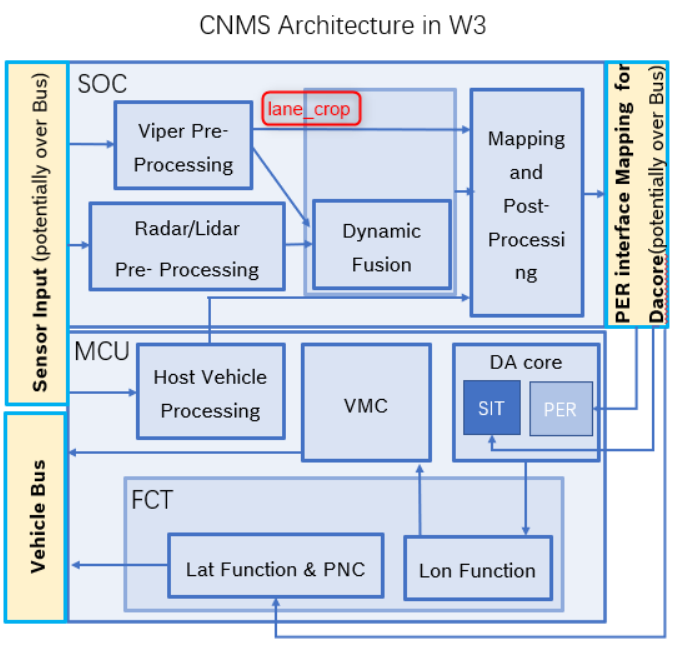
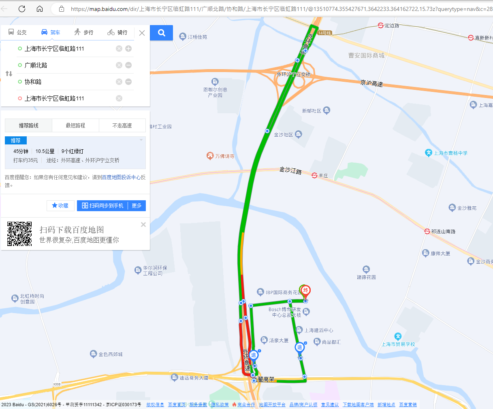
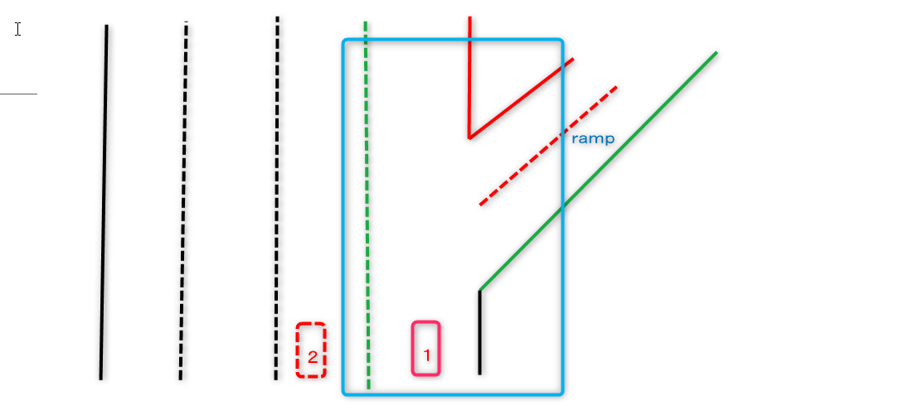
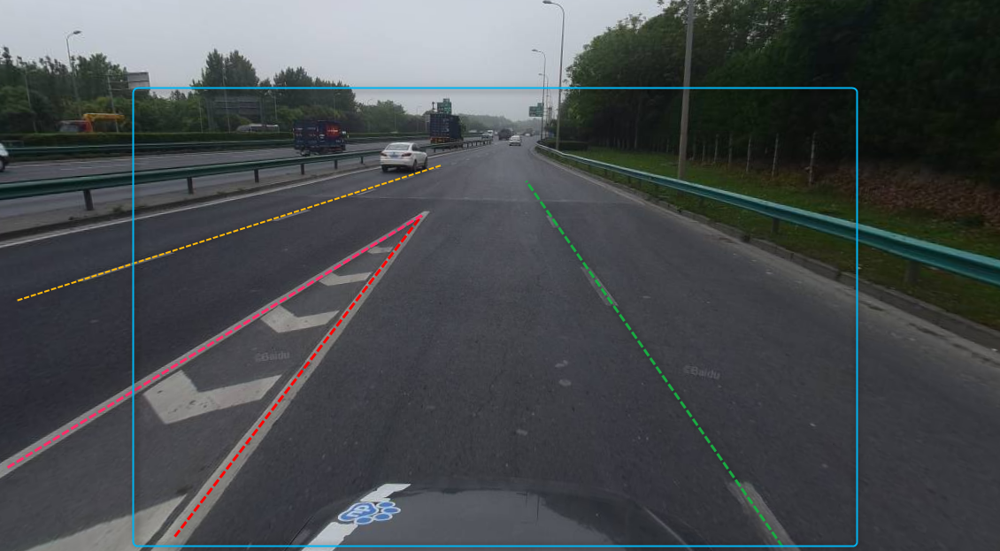

lane-crop req
Introduction
LANE CROP is a targeted processing module for the 418 Demo section. It is a temporary module and is not in the ACC SOP solution.
Even without Lane_crop, it does not affect ACC debugging.LANE_CROP is only temporarily treated with 418 DEMO, not in the SOP solution.
You can debug the CNMS architecture first, and LAN_CROP is then integrated into CNMS.
ACC CNMS architecture
As shown in Figure 1 is the ACC CNMS framework, the LANE_CROP module is to display the function of L2 ++ in 418A SAMPLE in addition to the ACC function;
LANE CROP module Specific content: It is a temporary processing of VIPER LANES to detect lanes in the ramp entrance: that is, to auxiliary VIPER to remove the unbroken lane margin near the ramp entrance.

Figure 1 ACC CNMS framework
interface
The input and output of lane_crop are the same interface; Lane_crop just cuts the unexpected edge line in Lane Boundaries
Interface wv3_xper_processed_lane_edge.hpp
ACC 418 DEMO route

Figure 2 RBCN 418 DEMO ACC route
Scenario
The ramp enters the main road and does not open ACC
The lower ramp is not necessary to handle
When driving at the right lane, the treatment of the ramp is necessary.
Delete the right line
other
Delete the side line with the largest angle of the parking space

Figure 3 Ring of the route when driving on the right side of the lane

Figure 4 Shanghai outer ring high speed to Suzhou ramp

Figure 5. Beizhai Road enters the outer ring ramp
Demand for HD Map Service
HD MAP calculate the electronic fence Convex Polygon in advance, Polygon data fixed parameters write the Lane Crop function
HD MAP only provides Convex Polygon information and provides attributes of remittance/out/out/way; no map data data for road elements is required
Basic judgment logic: When only in Polygon, when the left and right lanes are not parallel, the Lane Crop processing appears
The electronic fence coordinate system uses ENU, but it should be synchronized with the positioning of the projection origin, RBCN is the origin. @SHEN Ming, DD: 3/3
The road section is Shanghai Guangshun North Road-Shanghai Outer Ring-to Suzhou forkkin-Cao'an Highway fork port; 6 ramp entrances.You can extend an elevated roper port to the Cao'an Highway Ringka opening to prevent the normal ramp on the Cao'an Highway normally.
Requirements for Localization
Positioning does not have the function of MAP MATCHING,
Because there is no onboard HD Map Service
Because the four -dimensional QNX SDK compilation time is not determined, the integration time of HD Map Service is not determined
For lane -free positioning, the Global Pose only provides the location of GNSS information.
In the absence of Map Matching, Global Pose does not provide lane information; lane_crop needs to be relaxed (non -right lane. If the lane line is not parallel, delete the right lane line))
Global Pose provides the position of the ENU coordinate system.
Strategy
In the electronic fence, it is found that the left and right lane lines are not parallel, and according to the attributes of the electronic fence, delete the corresponding lane edge line
It is blocked outside the electronic fence without any treatment, even if the lane line is not parallel.